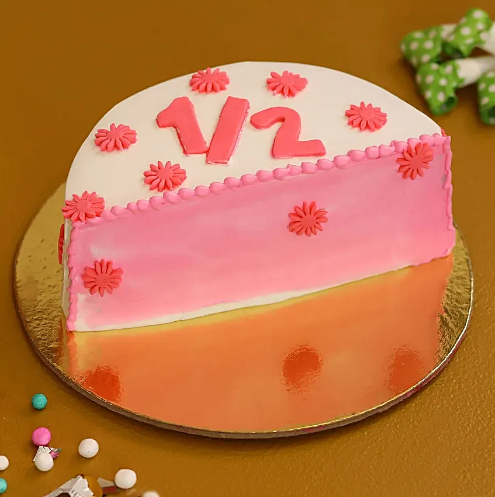

SA: "A la meitat de vosaltres, no us conec la meitat del que voldria...
...i el que jo voldria és menys de la meitat del que la meitat de vosaltres meirexeu."
Probablement, amb la segona part d'aquesta frase el senyor Baggins (Bolsón) es referia a la part de la meva família que, quan els hi demano quant de pastís volen, em diuen: "A mi la meitat!" I, just després, quan ja estic començant a fer-lo, "No! La meitat de la meitat! O fins i tot menys! Un terç!". I així fins l'infinit.
Per sort, em vaig poder escapar, fins que el meu oncle em va enxampar per demanar si feia falta més vi o no. "Si cada botella són 700ml, això són set dècims de litre, i en tenim 4, això són vint-i-vuit dècims, però a cada copa només hi caben dos cinquens... Quantes copes podem servir encara? Que ja saps que falta tota la part de família eivissenca..."
Com va dir en Jean-Paul Sartre, l'infern és l'altra gent. Però això debia ser perquè ell no coneixia les fraccions! Què em sabríeu dir que significa calcular la meitat, o bé un terç, o fins i tot, tres quarts d'alguna cosa? I si aquesta altra cosa és una fracció, què hem de fer?

Multipliquem en línia, Dividim en creu
Pensant què significa multiplicar i dividir, la norma és la següent:
|
MULTIPLICAR ⇨ multiplicar en LÍNIA, \[ \frac a b \cdot \frac c d = \frac{a \cdot c}{b \cdot d} \quad \quad \quad \quad \frac a b : \frac c d = \frac{a \cdot d}{b \cdot c} \] |
En aquesta activitat trobaràs una representació gràfica de com són aquestes operacions, amb explicacions de per què la regla és aquesta:
https://www.geogebra.org/m/mNZ6BTFE (Ventana nueva)
- Mou els punts assenyalats amb ✎ i amb les fletxes ▲ per modificar els valors de numerador i denominador.
- Utilitza els punts marcats amb una creu + per canviar la mida dels rectangles.
Dividir és multiplicar per l'inversa
|
La inversa d'una fracció, que s'escriu elevant la fracció a -1, és el mateix que la fracció girant el numerador i el denominador. \[ \left( \frac a b \right)^{-1} \] Fixa't que dividir per una fracció és igual a multiplicar per la seva inversa. \[ \frac a b : \frac c d = \frac a b \cdot \left(\frac c d \right)^{-1} = \frac a b \cdot \frac d c = \frac{a \cdot d}{b \cdot c} \] |